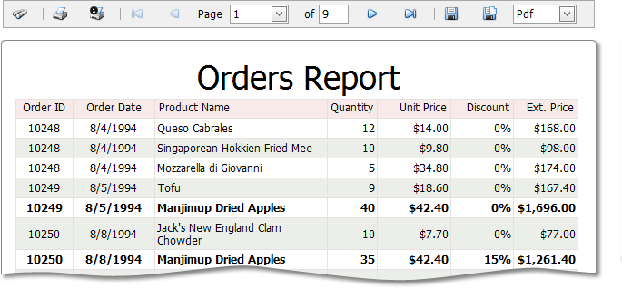

Classic Document Viewer
This section describes the capabilities provided by the Document Viewer, which is used to display, navigate, save and export report documents on the web.

Navigation
- Navigate to a Specific Report Page
- Navigate using Report Bookmarks
- Search for a Specific Text within a Report
Parameters
Printing
- Print a Report Using the PDF Web Browser Plug-In
- Install and Activate the Adobe Reader Plug-In for Printing in a Web Browser
- Print Reports Using the Native Functionality of a Web Browser
Exporting